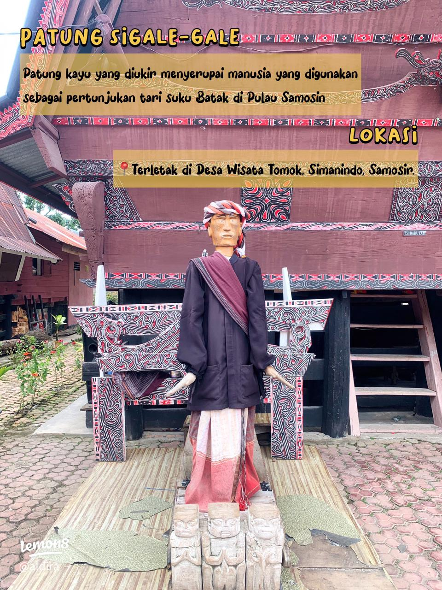
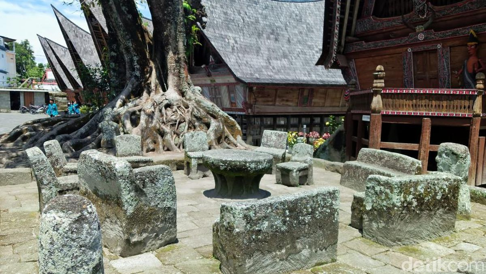
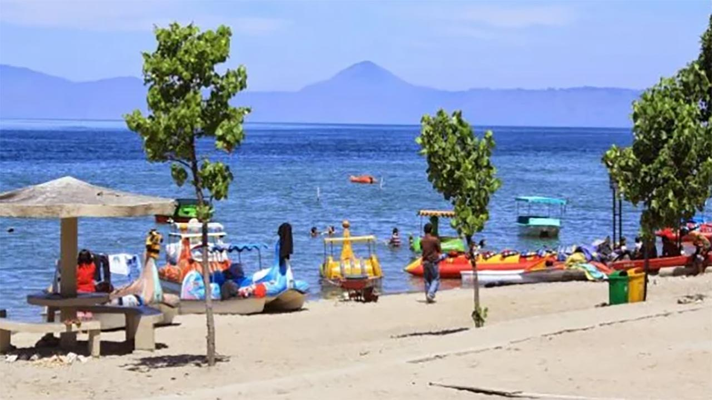
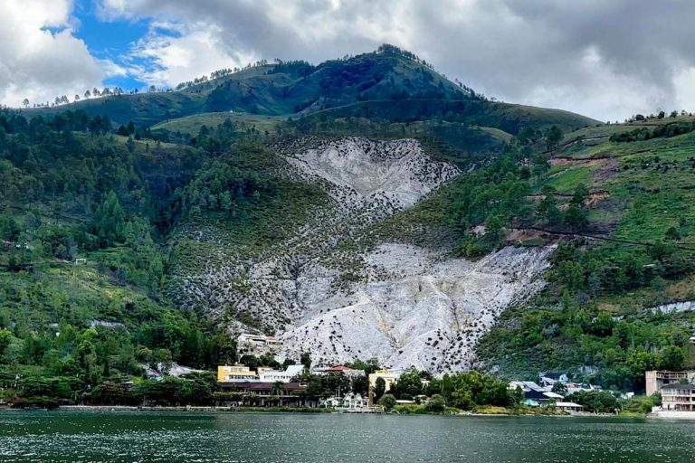
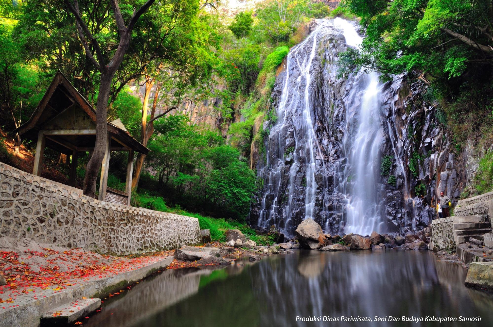
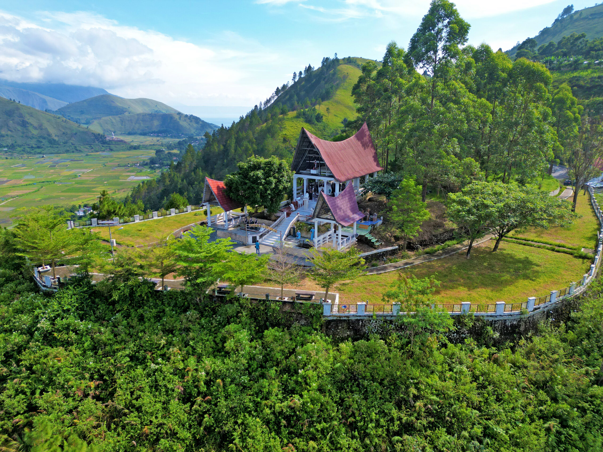
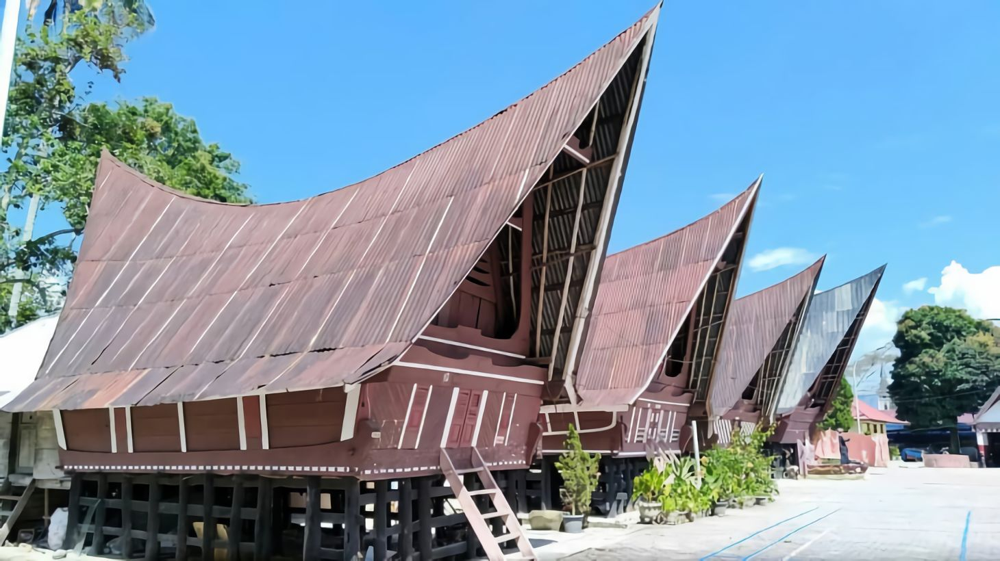
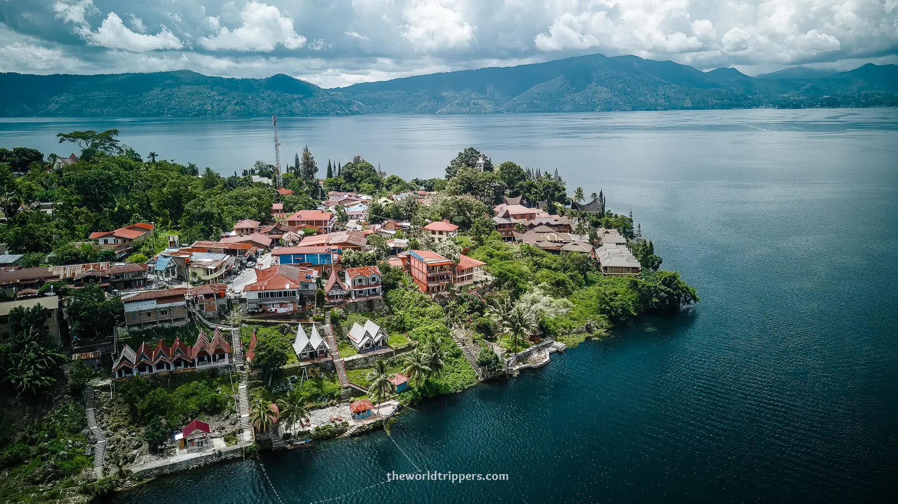
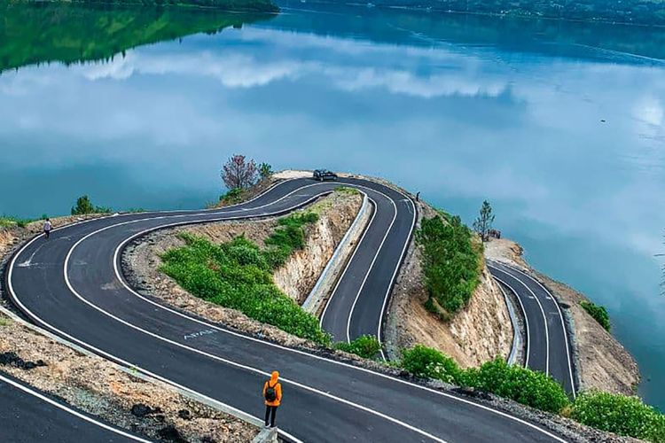

Samosir Island, Lake Toba
The heart of Batak culture—lakeside villages, traditional houses, music, and slow island living in the middle of Lake Toba.

Live the Rhythm of Lake Toba
Sitting in the middle of Lake Toba’s vast caldera, Samosir Island blends dramatic volcanic scenery with living Batak traditions. Base yourself in Tuk-Tuk for easy ferries, lakeside cafés, and music after dark, then explore village architecture, beaches, hot springs, and viewpoints around the island.
Top Attractions on Samosir
Culture, viewpoints, and easy day trips

Tomok Village
Walk among traditional Batak houses, visit the King Sidabutar tombs, and see the famous Sigale-gale wooden puppet.

Huta Siallagan (Ambarita)
Iconic stone chairs, restored houses, and cultural shows—an essential window into Batak history.

Parbaba Beach
Soft white sand and shallow, calm water—ideal for swimming, SUP, or a relaxed family afternoon.

Pangururan Hot Springs (Aek Rangat)
Soak in mineral-rich pools fed by volcanic hillsides—great after a day of touring.

Efrata Waterfall
A lush, easy-access cascade near Harian Boho—combine with village stops for a scenic loop.

Pusuk Buhit
Hike or drive to viewpoints on this sacred volcano for sweeping lake panoramas.
Suggested Tours & Experiences
Crafted for culture lovers and easy explorers

Culture Loop: Tomok & Ambarita
Traditional houses, stone chairs, Sigale-gale, and a Batak music stop in Tuk-Tuk.
Book Now
Island Circuit & Viewpoints
Parbaba Beach, Efrata Waterfall, and ridge lookouts—with flexible photo stops.
Book Now
Water Day: SUP, Kayak & Springs
Easy paddle along calm bays, lakeside lunch, and an evening soak at Aek Rangat.
Book NowEssential Travel Tips
Plan your Samosir stay
Best Time to Visit
Dry months (May–September) bring clearer views and calmer water; weekdays are quieter in Tuk-Tuk.
Getting There
Fly to Silangit (DTB) or Kualanamu (KNO). Continue by road to Parapat, then ferry to Tomok or Tuk-Tuk on Samosir.
Where to Stay
Tuk-Tuk is the hub for guesthouses, cafés, and live music; Pangururan suits hot-spring lovers.
Gallery
Heritage villages, calm bays, and volcanic hills
Ready to Explore Samosir Island?
From Batak heritage to hot springs and beaches—let us shape an easygoing island itinerary for you.